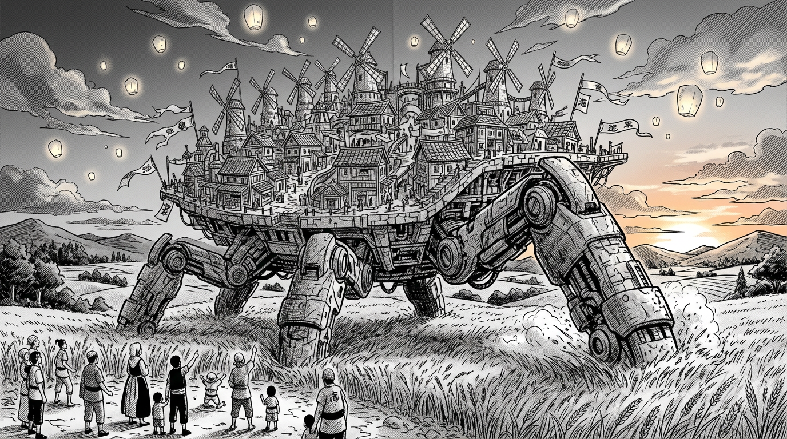
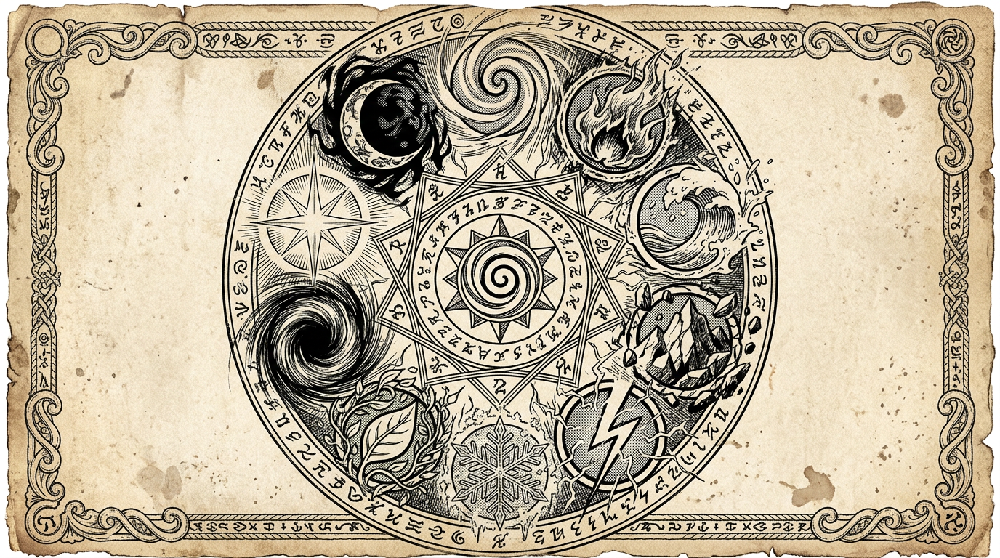

Культура Блуждающего Дола

На бескрайних западных равнинах Ауракса когда-то жили люди, не признававшие границ. Они не строили стен, не размечали территории, не вбивали в землю столбы с флагами. Вместо этого они построили нечто куда более удивительное — город, который ходил.
Блуждающий Дол стоял на шести колоссальных механическо-каменных лапах, приводимых в движение магией Ветра. Размером с небольшой мегаполис, он медленно и величественно шагал по зелёным равнинам, оставляя за собой шестиугольные отпечатки, в которых потом собиралась дождевая вода и прорастала трава. Жители говорили, что Дол не просто передвигался — он засеивал землю позади себя, как гигантский сеятель.
Наверху — идиллия. Ветряные мельницы сложной конструкции, которые не просто мололи зерно, но и пели: каждая была настроена на свою ноту, и когда ветер крепчал, весь город звучал как орган. Поля золотой пшеницы росли прямо на платформе города, в ящиках с насыпной почвой. Одноэтажные деревянные дома с черепичными крышами были украшены резьбой в виде спиралей — символа ветра. В центре возвышался механизм-сердце: пульсирующий кристалл в гнезде из шестерней, куда старейшины направляли ману, чтобы город делал очередной шаг.
Кочевники Ветра одевались в лёгкие, многослойные ткани — лён, хлопок, всё, что дышит. Небесно-голубой, салатовый, бежевый, белый. На поясах — мешочки с семенами и фляги. Их воины — Защитники — носили облегающие костюмы с элементами кожаной брони, глубокие капюшоны и тканевые маски на нижнюю часть лица. За спиной у каждого крепился плащ-крыло: при использовании магии ветра он раскрывался и превращал воина в планер.
Старейшины облачались в длинные струящиеся мантии с вышивкой — спирали ветра, переплетённые с ветвями деревьев. Украшения из резного дерева и перьев птиц. Ни золота, ни камней — только то, что дала земля.
Главная ценность кочевников — свобода и община. У них не было концепции «захвата территорий», ведь их дом всегда был с ними. Зачем воевать за клочок земли, если можно просто уйти?
Их вера называлась Великое Дыхание — анимистическая традиция, основанная на убеждении, что ветер переносит души умерших. Смерть для кочевников не была концом — она была возвращением в бескрайнее небо. Когда человек умирал, его тело оставляли на открытом воздухе, на специальной платформе на самой вершине города, и ждали, пока ветер «заберёт его». Родственники сидели рядом, слушая, как меняется направление воздуха, и когда порыв налетал особенно сильно — считалось, что душа ушла.
Раз в год кочевники праздновали Праздник Великого Дыхания: ветряные фонарики поднимались в небо сотнями, маги танцевали в воздухе, а дети соревновались, кто дольше удержит перо на потоке. Вечером старейшина произносил речь о свободе, о том, что небо принадлежит всем, и о том, что ветер — единственная вещь в мире, которую нельзя заковать в цепи.
Таким был Блуждающий Дол. Городом-мечтой, колыбелью ветра, песней, звучавшей над равнинами. Его мельницы пели. Его поля золотились. Его люди летали.
Но это было давно.
Основы магической системы Ауракса

Всё живое и неживое на Аураксе пронизано стихийной энергией — маной. Она кристаллизуется в форме Колец — небольших металлических ободков, каждый из которых содержит в себе концентрированную силу одной из десяти базовых стихий.
Маг активирует Кольцо, направляя через него свою ману. Чем сильнее воля и резерв мага — тем мощнее эффект. Но Кольцо — не батарейка: это скорее линза, фокусирующая сырую энергию в конкретную форму.
Внутри каждой стихии существуют ранги колец — от простейших, доступных рядовым солдатам, до легендарных, которых в мире единицы. Низшее кольцо Огня может зажечь факел. Легендарное — создать миниатюрное солнце. Это не «прокачка» одного кольца, а совершенно разные физические артефакты с разной специализацией.
Большинство магов носят одно-два кольца. Три — уже элита. Четыре — генералы и лидеры фракций. Потоки разных стихий конфликтуют внутри тела, вызывая боль и потерю контроля. Но если маг научится совмещать две стихии одновременно, их кольца могут слиться — и породить нечто совершенно новое. Не сумму двух сил, а третье качество, которого не существовало прежде.
Впрочем, за слияние приходится платить: половина мощности каждого кольца теряется. Идеальное слияние без потерь — это миф. По крайней мере, так считается.